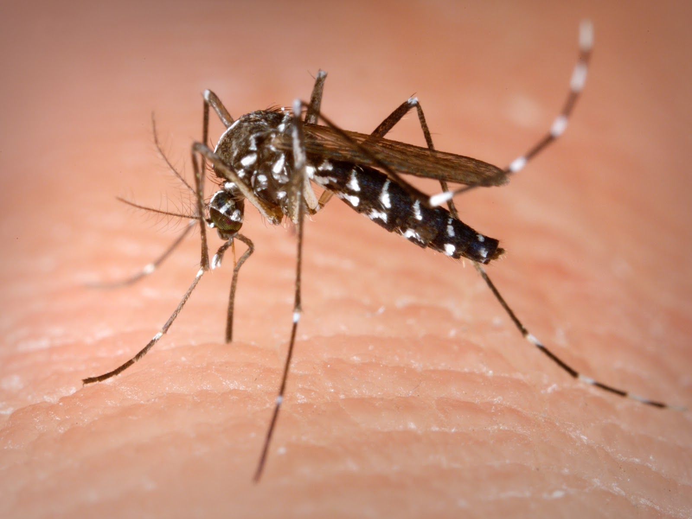
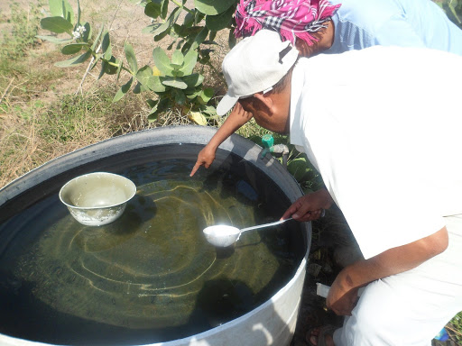

About Dengue Detector
Introduction

Dengue is a viral vector-borne disease, which is transmitted by the Aedes Aegypti mosquito. With 300 million cases a year and no effective vaccine, dengue poses a threat to public health. It is particular prevalent in south east Asia. Mosquito breeding sites are often in artificial water containers, e.g. old tires, buckets and vases. There are various approaches to monitoring and controlling the disease. The project "Large Scale Detailed Mapping of Dengue Vector Breeding Site by using Street View Images and Object Recognition" aims to automatically detect those breeding sites. Google Street View Images are processed by an object recognition algorithm to detect and classify the breeding sites. The Google Street view image library is limited to the time when the pictures were taken by google and the access to the location by car. Therefore, in this work, we present a chatbot to increase the coverage of geo-tagged images.
The Chatbot
The chatbot enables volunteers to contribute newer and missing pictures to the database. The chatbot is developed and published on the widely spread facebook messenger platform. Moreover the chatbot includes Gamification elements, functionality to retrieve the number of reported dengue cases in an area as well as general information on dengue. The proficiency of the chatbot is evaluated at Mahidol University in Thailand.
Master thesis
Two master thesis were written on the topic. The thesis can be downloaded here